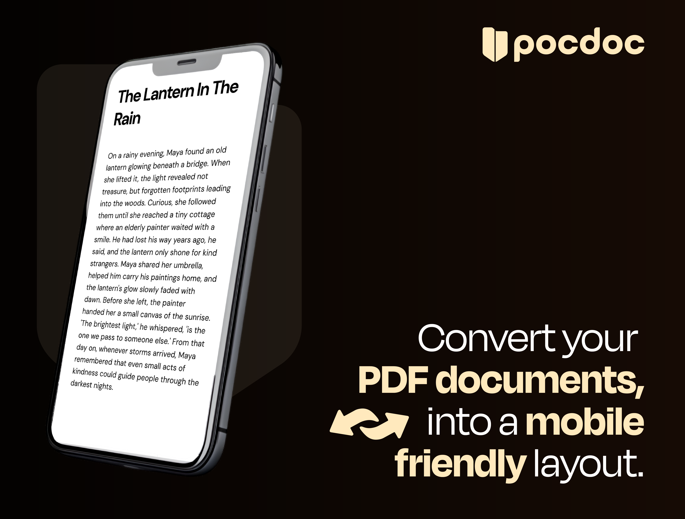

Selected work
Pocdocs.
A mobile-first document studio that transforms desktop PDFs for layout, editing, preview, and export on any device.
The problem
PDFs are still built for A4 desktops. On a phone they’re unreadable, uneditable, and painful to share. Pocdocs reframes the document as something you can actually work with on the device in your hand.

The product
Upload a PDF, transform it for mobile layout, edit inline, preview as your audience will see it, and export when ready. The interface stays minimal — the document stays the hero.

Core capabilities
-
Mobile transform
Reflow and resize content so documents read naturally on small screens — not shrunk desktop pages.
-
Inline editing
Adjust copy and structure without leaving the browser — built for speed, not desktop publishing suites.
-
Export ready
Preview the final output, then export in formats your workflow already expects.